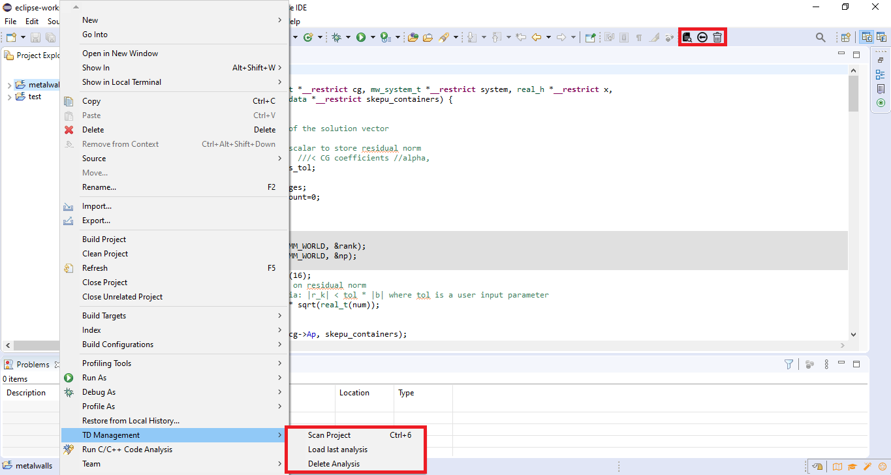

The user of the plugin is able to start a new analysis, load the last analysis, and delete the analysis of a project. These options are accessible in two ways by selecting the project you want (see Figure). First with three new toolbar icons, where the first corresponds to a new analysis, the second to load the last analysis, and the third to the deletion of the analysis. The second way is from the TD Management option of the popup menu (which opens with a right-click) in the project explorer.
